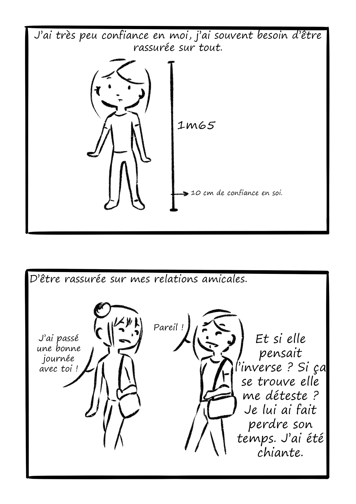
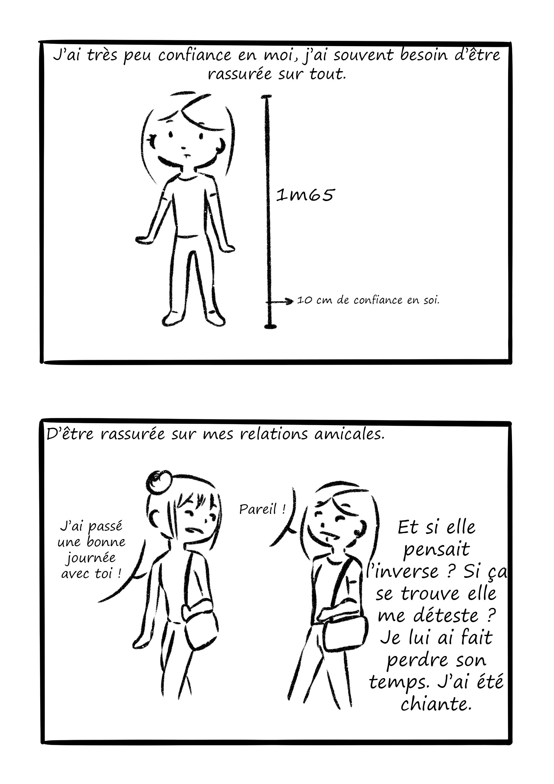

Projet libre
Nous avions un projet libre de fin d'année. Comme j'avais beaucoup apprécié de faire une bande dessinée en cours de dessn, j'ai décidé de créer une "petite" bande dessinée avec des personnages simples. Cette bande dessinée parlera surtout de mes ressentis lors de cette période de fin d'année, de toutes les choses qui me trottaient dans la tête à ce moment. J'ai voulu extérioriser certaines pensées négétive et en profiter pour faire mon projet tout en dénonçant certaines choses. Pour le coup c'est une BD qui traite de pas mal de sujet personnel et il m'a fallu beaucoup de courage pour la rendre et pour laisser les personnes de ma promo la lire. J'ai eu beaucoup de retour positif, cela m'a motivé par la suite à continuer à faire ce genre de bandes dessinées mais à but humouristique cette fois.


 



Exercice de cours et carnet de croquis
Ici se trouve des exercices fait en cours ainsi que des croquis demandés sur le thème du corps.